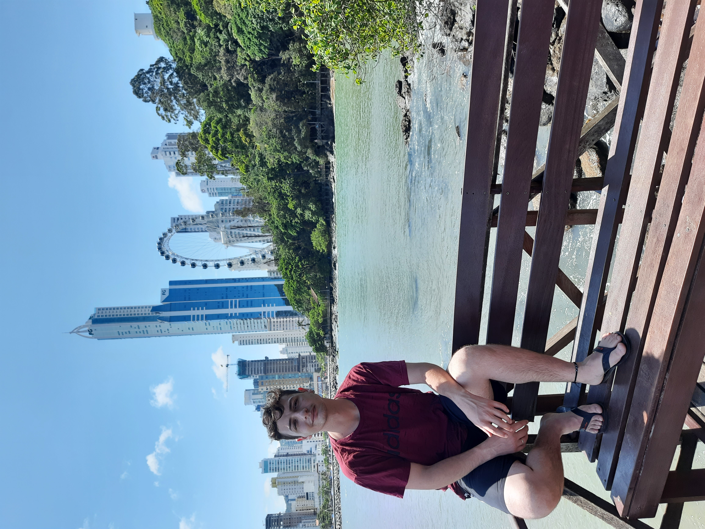

About me
Sou estudante de Análise e Desenvolvimento de Sistemas (ADS) e estou em busca de uma carreira como programador. Meu sonho é transformar minhas habilidades técnicas em soluções que façam a diferença no mundo digital.Tenho uma experiência diversificada, tendo atuado nas áreas administrativa, vendas e suporte de TI. Nesse último campo adquiri sólida experiência em manutenção de computadores e produtos eletrônicos, o que me proporcionou uma visão prática e detalhada das tecnologias que sustentam o dia a dia de muitas empresas.
Além da minha paixão por tecnologia, gosto muito de aprender sobre novas tendências e inovações na área. Sou fascinado por astronomia e filosofia, e sempre busco expandir meu conhecimento sobre o universo e as grandes questões da vida. Nos meus momentos de lazer, adoro ver filmes, ler livros e passar tempo ao ar livre e apreciando a natureza. Tenho dois gatos maravilhosos e uma esposa incrível que me apoia em todas as minhas jornadas.
Sou um aprendiz rápido, com excelente capacidade de comunicação e domínio completo das ferramentas do pacote Office. Essas competências permitem eu me adaptar facilmente a diferentes ambientes de trabalho e colaborar de forma eficiente com equipes multidisciplinares.
Estou sempre em busca de novos desafios e oportunidades de crescimento, e acredito que minha combinação de experiência prática, interesses variados e determinação para aprender novas tecnologias será um diferencial na minha trajetória profissional.
